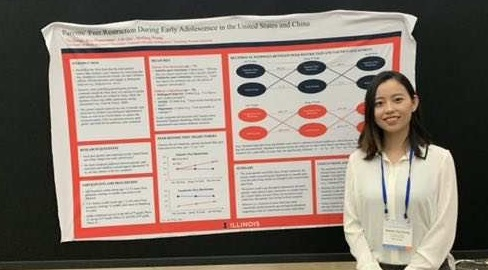

Research Highlights
My research program examines how socialization with parents and peers affects child development. Specifically, I explore differences (and similarities) across cultures to provide insight into how norms and values of social life affect development.

Conference Presentations
2019 Society for Research in Child Development Biennial Meeting (SRCD), Baltimore, Maryland, USA/li>
2019 International Society for the Study of Behavioral Development (ISSBD) Regional Workshop: Parenting Among Asians, Hong Kong
2020 Society for Research on Adolescence Biennial Meeting (SRA), Virtual Meeting
2020 American Educational Research Association Annual Meeting (AERA), Virtual Meeting
2021 Society for Research in Child Development Biennial Meeting (SRCD), Virtual Meeting
2022 American Educational Research Association Annual Meeting (AERA), Virtual Meeting
2023 Society for Research in Child Development Biennial Meeting (SRCD), Salt Lake City, Utah, USA
Reseach Assistant at Center for Parent-Child Studies：Early Math Learning Project (NSF: HRD-1561723)
Assisted in the implementation of a large-scale (over $1,900,000) experimental study funded by the National Science Foundation.
running a 2×2 factorial design experiment
causal inference on the intervention effect of mindset by using appropriate statistical models
(e.g., t-test, ANCOVA, linear mixed effect model)
Coordinate with a team of undergraduate RAs on running participants in the lab (procedure training, IRB tutoring, etc.)